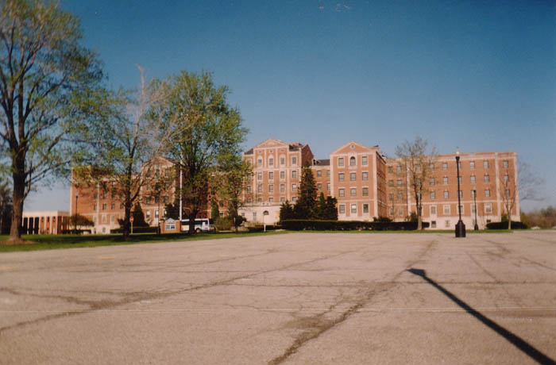

The Broadview Developmental Center is a hulking brick structure which stands on Route 176 in Broadview Heights, just south of Parma in Cuyahoga County. For years I've spoken to people who wondered about the place, and even to a small handful who managed to get inside. It's definitely one of the more imposing institutional buildings you'll come across in this area.

The main problem with exploring the Developmental Center is that one third of the building had been sealed off, stripped down, and remodeled into the Broadview Heights community rec center. The renovated wing is on the left as you face the front. But the rest of the building is as vacant and neglected as any abandoned place I've seen.
The other big obstacle is the fact that there is a police station mere feet from the Broadview building. The police station and this place actually share a parking lot--and the cops face the vacant side. This makes sneaking inside very tricky. Some might even say impossible. I'd say your odds of getting caught at this place are better than 50/50.
The Broadview Developmental Center has definitely seen better days. It was built in 1939 as part of Roosevelt's public works program, at a time when schools, hospitals, and other government buildings were going up all over the country. It was built as the Broadview Veterans Administration Hospital, and was used mainly for the treatment of tuberculosis, which was a major threat at that time. For the next two decades it housed sick veterans. By 1966 the TB threat had largely faded, and the federal government handed the building over to the state of Ohio. It became the Developmental Center and was used as a clinical care facility for the "mentally retarded"--their words, not mine. A number of children would actually grow up within its walls.
This lasted until 1989, when de-institutionalization finally got Broadview. The Center was closed down and its patients were transferred to group homes or private care. In 1995 the city of Broadview Heights spent $5 million to renovate the north wing into the rec center and landscape the grounds. At this time the police station was put in. The next step, according to a March 2002 Cleveland Plain Dealer article, is the complete demolition of the main building. It will be replaced by a modern rec center with an indoor pool and track.
But for quite a while the Broadview Developmental Center stood mostly abandoned, rarely explored and therefore eerily untouched. At night, the halls of Broadview were said to be haunted by the "Pink Lady," the ghost of a former resident--probably from the good old "mental retardation" days, since I don't think there were female patients when it was the VA.
Somehow my friend Erik and I were able to get into Broadview in April of 2002. As hard as getting inside was for us, the experience turned out to be well worth the effort. First we got into what we assumed would be a basement but turned out instead to be a low-ceilinged crawlspace. The Plain Dealer article talks about "tunnels," so I assume that's where we were. It was very muddy and dirty beneath the building, which apparently has no basement at all. We saw pipe inspection tags last endorsed in the 1950s, but no building access at all--not so much as a trap door. Later I was informed that the tattered insulation you see hanging from the pipes is pure asbestos, almost certainly "pollenated" in the air and quite dangerous. We wore white painters' masks when we were there, so I'm hoping this is enough to save me from an early grave.
We finally made it inside a little later. To see what the Broadview Developmental Center looks like behind its boarded doors and windows, click below.
ENTER
UPDATE: After the Plain Dealer reported on its sorry condition and probable fate, the demolition equipment finally came for the Broadview Center in the summer of 2006. By September it was obliterated, nothing but a memory once they built the shiny, modern recreation center in its place. What became of the Pink Lady remains unknown.
Memorial Page dedicated to Erik, who visited Broadview with me.
Back
forgottenohio@yahoo.com
facebook.com/andy.henderson.319